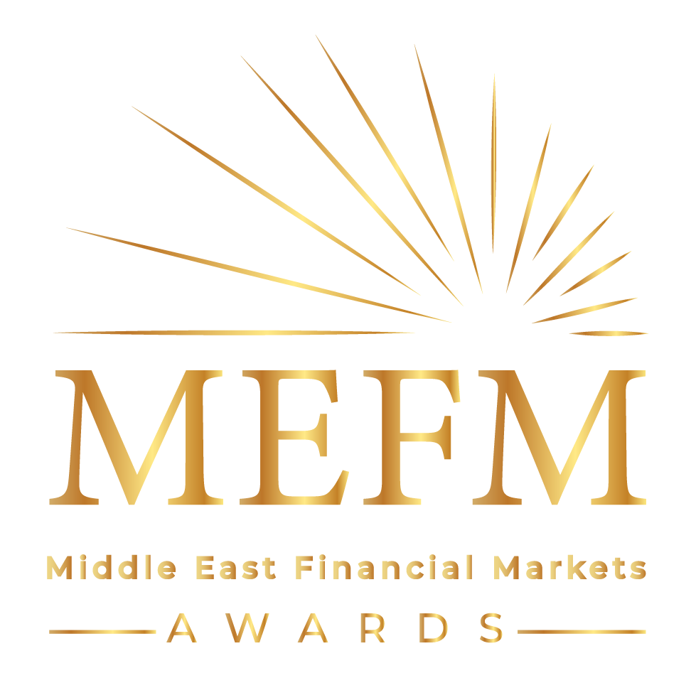

Middle East Financial Markets Awards Ceremony — Full Event Platform
MEFM is the most prestigious black-tie awards gala in the Middle East for the Forex & financial markets industry — held at the iconic Atlantis The Palm, Dubai. The platform powers the event website, public online voting for financial institutions, award category management, sponsorship packages, luxury section, media gallery, past event photos, and a Become a Sponsor application — organized by Smart Vision Group.


ORGANIZED BY SMART VISION GROUP · ATLANTIS THE PALM · DUBAI, UAE 🇦🇪Project Overview
The Middle East Financial Markets Awards Ceremony (MEFM) is the most prestigious black-tie awards gala in the region for the Forex and financial markets industry. Held at the legendary Atlantis The Palm in Dubai, this private event gathers the top Forex brokers, financial institution CEOs, industry leaders, sales directors, marketing heads, and influential women in finance — for a night of recognition, networking, and celebration.
The platform built for MEFM is the most unique in this portfolio — it introduces a public online voting system where industry participants vote for their most trusted Forex brokers and financial institutions across multiple categories. Each nominee company has a public profile with logo, regulatory info, and a live vote button. The results feed directly into the awards ceremony — making it a community-driven recognition event. The admin dashboard manages nominees, vote counts, award categories, sponsorship packages, media gallery, and the luxury event section.
System Components
The public website is the face of the MEFM gala — showcasing the venue (Atlantis The Palm), ceremony overview, promotional videos, past event gallery, a dedicated luxury section, sponsorship packages, and a live countdown. The site drives both sponsorship inquiries and voting participation from the global Forex community.
The centerpiece of the MEFM platform — an open online voting system where Forex traders, investors, and industry participants vote for the most trusted financial institutions. Each nominee company has a public profile with logo, regulatory body, website link, and nomination category. The voting system includes anti-duplicate measures, an admin vote monitoring panel, and the ability to open/close voting rounds.
Six prestigious award categories, each with its own criteria and nominees — from Top 100 Trusted Financial Institutions to Top 25 Influential Women in Finance. Each category is publicly showcased with detailed criteria and award imagery. The admin manages nominees per category, monitors vote tallies, and selects final winners for the ceremony night.
A comprehensive admin dashboard for the Smart Vision team — manage nominee companies per award category, monitor live vote counts, open/close voting rounds, manage sponsorship applications and packages, upload past event gallery photos, manage promo videos, and update the luxury section content.
Multiple sponsorship packages publicly listed with their benefits. Companies apply via the 'Become a Sponsor' page — all applications land in the admin for Smart Vision review. The Luxury section showcases the exclusive gala experience offered to sponsors: premium table placements, branding at Atlantis, and live recognition during the awards ceremony.
Award Categories
Six prestigious industry awards recognizing excellence across different dimensions of the financial markets world — from institutional trust to personal leadership to gender diversity.
Key Features
Outcomes
Technical Challenges
A public online voting system for a prestigious industry awards ceremony must be both accessible and resistant to manipulation. The challenge was designing a voting flow that allows genuine industry participants to vote while preventing vote stuffing, bot submissions, and duplicate votes — using IP tracking, device fingerprinting, and rate-limiting. The admin dashboard had to give full visibility into voting patterns with anomaly detection capabilities.
Each of the 6 award categories has a different type of nominee — Top 100 Trusted Institutions features broker companies, while Top 50 CEOs features individuals, and Top 25 Influential Women features specific leadership profiles. The platform needed a single unified admin interface that could manage nominees of fundamentally different entity types, assign them to correct categories, and display them appropriately on the public voting and awards pages.
Atlantis The Palm is one of the most iconic luxury venues in the world. The digital platform needed to match this premium positioning — conveying the exclusivity, prestige, and black-tie nature of the MEFM gala through design, imagery, and copy. The platform had to communicate 'invite-only luxury event' while still being functional for public voting and sponsor acquisition — balancing exclusivity with accessibility that serves both brand image and commercial objectives.